Bearing preload adjustment
1. Install the bearing race into the clutch housing (shims removed).
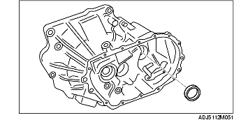
2. Set the differential assembly into the clutch housing.

3. Set the bearing races into the SST (selector) as shown in the figure.
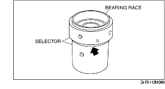
4. Set the differential component into the clutch housing, and set the bearing race and the SST (selector) on the differential.
5. Set the SST (collars) in the positions shown in the figure.
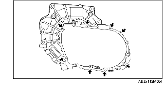
6. Install the transaxle case and tighten the SST (bolts) to the specified torque.

7. To seat the bearings, mount the SST (bars) on parts A and B of the selectors, and turn the selectors so the gaps C are widened. Then turn the SST in the reverse direction until the gaps C are eliminated.
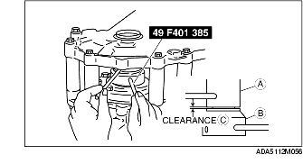
8. Install the SST to the differential pinion gear through the transaxle case.
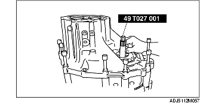
9. Turn the SST with a torque wrench. Adjust the SST (selector) with the bars until the specified preload is obtained.
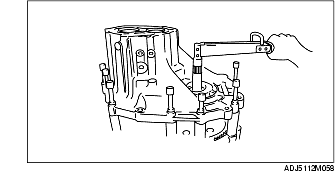
10. Remove the SST.
11. Measure the clearance around the entire circumference of the SST (selector).
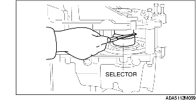
12. Select the proper adjustment shim(s) to be used for the differential by referring to the table and selecting the shim which is nearest (on the thick side) to the largest measured clearance in the selector.
Adjustment shim thickness
13. Remove the SSTs (bolts).
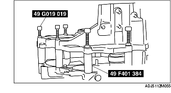
14. Remove the transaxle case and the SSTs (collars).
15. Remove the bearing race from the SST (selector).
16. Install the selected shim(s) and bearing race to the transaxle case.
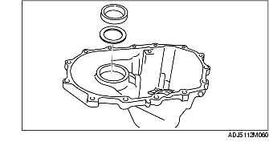
17. Set the differential assembly into the clutch housing.
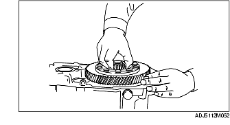
18. Install the transaxle case onto the clutch housing.
19. Install the SST to the differential side gear through the transaxle case.
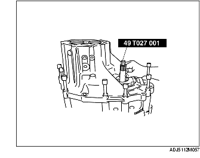
20. Measure the bearing preload.

21. Remove the SST.
22. Remove the transaxle case and differential assembly.